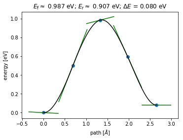

Using SciPy and LAMMP for Kinetic Monte Carlo Platform

Making a kinetics Monte Carlo platform using SciPy and LAMMP.
Example output
KMC step 1
ABC step 1 displacement = 0.227
ABC step 2 displacement = 1.432
ABC step 3 displacement = 1.702
ABC step 4 displacement = 1.855
ABC step 5 displacement = 1.976
ABC step 6 displacement = 2.600
ABC step 6 displacement = 2.600 (without penalty functions)
NEB calculation Begin
Step[ FC] Time Energy fmax
BFGSLineSearch: 0[ 0] 22:15:04 -478.527190 0.7884
BFGSLineSearch: 1[ 2] 22:15:08 -478.713136 0.1264
BFGSLineSearch: 2[ 3] 22:15:10 -478.736565 0.0476
Step[ FC] Time Energy fmax
BFGSLineSearch: 0[ 0] 22:15:11 -478.655201 0.0940
BFGSLineSearch: 1[ 1] 22:15:13 -478.656759 0.0389
Step Time Energy fmax
BFGS: 0 22:15:22 -476.953036 2.6077
BFGS: 1 22:15:27 -477.252710 1.8046
BFGS: 2 22:15:33 -477.476933 1.0780
BFGS: 3 22:15:38 -477.607836 0.5111
BFGS: 4 22:15:43 -477.664734 0.3071
BFGS: 5 22:15:49 -477.681873 0.3395
BFGS: 6 22:15:54 -477.706804 0.3279
BFGS: 7 22:16:00 -477.723018 0.1892
BFGS: 8 22:16:05 -477.731365 0.1241
BFGS: 9 22:16:11 -477.736875 0.1239
BFGS: 10 22:16:16 -477.742986 0.1539
BFGS: 11 22:16:21 -477.748930 0.1101
BFGS: 12 22:16:27 -477.751942 0.0808
NEB calculation Finished
Barrier= 0.9846223063690331
Found neighbor state no. 1
ABC+NEB calculation time: 244.7346179485321
Import lib
from lammps import lammps
import numpy as np
from scipy.optimize import minimize
from ase.io import read, write
from ase import Atoms
from copy import deepcopy
from numpy import linalg as LA
import itertools
import matplotlib.pyplot as plt
import time
from ase.calculators.eam import EAM
from ase.neb import SingleCalculatorNEB
from ase.neb import NEBTools
from ase.optimize import BFGS
from ase.optimize import QuasiNewton
Initiate LAMMPS environment
# lmp = lammps() #normal initialize LAMMPS
lmp = lammps(cmdargs=["-screen","none"]) #turn off screen output
lmp.file("etc/config.in.107")
natoms = lmp.get_natoms()
boxlo,boxhi,xy,yz,xz,periodicity,box_change = lmp.extract_box()
cubic_size = boxhi[0]-boxlo[0]
#Set potential energy calculation
lmp.command("compute 1 all pe")
lmp.command("variable pe equal pe")
#calculate potenEn
lmp.command("run 0 pre no post no")
potenEn = lmp.extract_variable('pe','all',0)
x = lmp.gather_atoms("x",1,3) #Define the type of variable "x" as lammps.c_double_Array_93 object
enable_penalty = True
Extract Python array of coordinates form LAMMPS
coords = lmp.gather_atoms("x",1,3)
import_position = list(zip(*(iter(list(coords)),) * 3))
#LAMMPS atom type: 1=Ni, 2=Al, 3=Re
atom_type = []
atom_type_lammps = lmp.gather_atoms("type",0,1)
for i in range(natoms):
if(atom_type_lammps[i]==1):
atom_type.append("Ni")
elif(atom_type_lammps[i]==2):
atom_type.append("Al")
else:
atom_type.append("Re")
#LAMMPS atom order
atom_order = []
for i in range(len(import_position)):
atom_order.append(i)
atom_order = np.array(atom_order)
Dump function
def dump(atomic_position, filename):
element = atom_type
structure =Atoms(element,
positions=atomic_position)
#wrap positions to unit cell
structure.set_cell((boxhi[0]-boxlo[0]) * np.identity(3))
structure.set_pbc((True, True, True))
structure.wrap(eps=0.1)
structure.write(filename, append=True)
LAMMPS energy function
# Plain array without dimensions
def get_poten(atomic_position):
for i in range(len(atomic_position)):
x[i] = atomic_position[i]
lmp.scatter_atoms("x",1,3,x)
lmp.command("run 0 pre yes post no")
potenEn = lmp.extract_variable('pe','all',0)
return potenEn
Gaussain energy function
# dimension list
gaussian_list = []
sigma_gauss = 1.0 #Sigma square
a_gauss = 1.0 #W
def get_gauss(atomic_position_flat):
atomic_position = list(zip(*(iter(list(atomic_position_flat)),) * 3))
gaussianEn =0;
for each_gaussian in gaussian_list:
power_part=0;
for index in range(len(atomic_position)):
for variable in range(3):
#map new order of gaussian variables accordding to optimization wrapper function, important!
atom_id = atom_order[index]
power_part = power_part - np.square(atomic_position[index][variable] - each_gaussian[atom_id][variable])
power_part = power_part / (2*sigma_gauss)
gaussianEn = gaussianEn + a_gauss*np.exp(power_part)
return gaussianEn
SciPy optimization wrapper
#Optimization function wrapper
#A lot of dimension fix has to be done before in here
def optimize_wrapper(atomic_position):
global atom_type
global atom_type_lammps
global atom_order
atom_type_ori = deepcopy(atom_type)
#create numpy array of atomic_position
atomic_position = np.array(atomic_position)
#gather element type data from LAMMPS and add into the array
atom_type_lammps = lmp.gather_atoms("type",0,1)
atom_type_lammps_nparray = np.array(atom_type_lammps)
atomic_position = np.column_stack((atomic_position, atom_type_lammps_nparray))
#add atom order array for mapping gaussian variables and sorting all atoms after finish optimization
atomic_position = np.column_stack((atomic_position, atom_order))
#separate optimizing atoms and fix atoms by y-position = 0.5 (fix atoms from the first plane to facilitate ABC method)
fix_atom = atomic_position[atomic_position[:,1] < 0.5]
fix_atom_list = fix_atom.tolist()
opt_atom = atomic_position[atomic_position[:,1] > 0.5]
opt_atom_list = opt_atom.tolist()
all_atom = fix_atom_list + opt_atom_list
#update new atom order
for i in range(natoms):
atom_order[i] = int(all_atom[i][4])
#update new order of element type to atom_type array
for i in range(natoms):
if(all_atom[i][3]==1):
atom_type[i]="Ni"
elif(all_atom[i][3]==2):
atom_type[i]="Al"
else:
atom_type[i]="Re"
#update new order of element type to LAMMPS
for i in range(natoms):
atom_type_lammps[i] = int(all_atom[i][3])
lmp.scatter_atoms("type",0,1,atom_type_lammps)
#map new order of gaussian variables accordding to the new atom order, important!
#extract only coordinate from the array to be sent to SciPy optimizer
fix_atom = fix_atom[:,[0,1,2]]
opt_atom = opt_atom[:,[0,1,2]]
#call back function for mornitoring optimization progress
callback_itter = 1
def callbackF(Xi):
global callback_itter
optimizing_atom_tuple = list(zip(*(iter(list(Xi)),) * 3))
optimizing_atom = np.array(optimizing_atom_tuple)
fix_atom_array = np.array(fix_atom)
dump_position = np.concatenate((fix_atom_array,optimizing_atom),axis=0)
dump(dump_position,"opt_traj.xyz")
callback_itter += 1;
def objective_func(optimizing_atom, args) :
fix_atom = args.get("fixed_atom")
fix_atom = list(itertools.chain.from_iterable(fix_atom))
atomic_position = list(fix_atom) + list(optimizing_atom)
poten_en = get_poten(atomic_position)
if(enable_penalty==True):
penalty_en = get_gauss(atomic_position)
else:
penalty_en = 0.0
total_en = poten_en + penalty_en
return total_en
optimization_result = minimize(objective_func,
x0 = opt_atom,
args = {"fixed_atom":fix_atom},
method='BFGS',
callback=callbackF,
options={'gtol':1e-2,'maxiter': None, 'disp': False}
)
#combine optimizing atom and fix atom into atomic_position
optimizing_atom = optimization_result.x
optimizing_atom= list(zip(*(iter(list(optimizing_atom)),) * 3))
optimizing_atom = np.array(optimizing_atom)
atomic_position = np.concatenate((fix_atom,optimizing_atom),axis=0)
#combine atomic_position atom_order, sort by atom order (important step for checking total displacment)
combine_array = np.column_stack((atomic_position, atom_order))
combine_array = combine_array[combine_array[:,3].argsort()]
atomic_position = combine_array[:,[0,1,2]]
#rollback old atom type order
atom_type = atom_type_ori
#rollback old atom type order for LAMMPS
for i in range(natoms):
if(atom_type[i]=="Ni"):
atom_type_lammps[i] =1
elif(atom_type[i]=="Al"):
atom_type_lammps[i]=2
else:
atom_type_lammps[i]=3
lmp.scatter_atoms("type",0,1,atom_type_lammps)
#sort atom_order back to originol value
atom_order = atom_order[atom_order.argsort()]
optimization_result.x = atomic_position
return optimization_result
NEB wrapper
class NEB:
def __init__(self, initial, final, n_image=5):
self.initial = initial
self.final = final
self.transition_stat = None
self.barrier = None
self.n_image = n_image
def run(self):
print("NEB calculation Begin")
initial_image =Atoms(atom_type, positions=current_pos)
final_image =Atoms(atom_type, positions=new_state)
initial_image.set_cell((boxhi[0]-boxlo[0]) * np.identity(3))
initial_image.set_pbc((True, True, True))
final_image.set_cell((boxhi[0]-boxlo[0]) * np.identity(3))
final_image.set_pbc((True, True, True))
NiAlRe_EAM = EAM(potential='etc/NiAlRe.eam.alloy')
# Relaxation before NEB
initial_image.set_calculator(NiAlRe_EAM)
qn = QuasiNewton(initial_image)
qn.run(fmax=0.05)
final_image.set_calculator(NiAlRe_EAM)
qn = QuasiNewton(final_image)
qn.run(fmax=0.05)
images = [initial_image]
for i in range(self.n_image-2):
image = initial_image.copy()
image.set_calculator(NiAlRe_EAM)
images.append(image)
images.append(final_image)
neb = SingleCalculatorNEB(images)
neb.interpolate()
bfgs = BFGS(neb)
bfgs.run(fmax=0.1)
for item in images:
item.set_calculator(NiAlRe_EAM)
nebtools = NEBTools(images)
print("NEB calculation Finished")
# Create a figure with custom parameters.
fig = plt.figure(figsize=(5.5, 4.0))
ax = fig.add_axes((0.15, 0.15, 0.8, 0.75))
nebtools.plot_band(ax)
fig.savefig('latest_neb.png')
#neb output: transition_state, barrier
self.transition_state = images[int((self.n_image-1)/2)].positions #Can be fixed as highest energy imagee
self.barrier,dE= nebtools.get_barrier(fit=False)
output = {
"transition_state": self.transition_state ,
"barrier": self.barrier
}
return output
clear old files
# clear old files
import os
file_name = ["opt_traj.xyz", "neighbor_state.xyz", "abc_step.xyz", "transition_state.xyz","log.lammps","latest_neb.png"]
for filename in file_name:
try:
os.remove(filename)
except OSError:
pass
current_pos = deepcopy(import_position)
KMC Step
for kmc_step in range(1,10): #KMC step
kmc_start_time = time.time()
print("KMC step", kmc_step)
#restart ABC variables
n_neighbor = 0
neighbor_state = []
transition_state_list = []
barrier_list = []
gaussian_list = []
just_added = False
for i in range(50): #ABC step
abc_start_time = time.time()
if(just_added == True):
#just added from transition state, skip 1 time
just_added = False
else:
#Add gaussian at the current state also
temp_list = deepcopy(current_pos)
gaussian_list.append(temp_list)
#optimization
callback_itter = 1
enable_penalty = True
optimization_result = optimize_wrapper(current_pos)
#check displacment
relaxed_position = optimization_result.x
relaxed_position = np.array(relaxed_position)
current_pos = np.array(current_pos)
difference_pos = np.round(relaxed_position - current_pos,2)
displacement = LA.norm(difference_pos)
print("ABC step {0} displacement = {1:5.3f}".format(i+1, displacement))
dump(relaxed_position,"abc_step.xyz")
#found new state
if(displacement >= 2.5):
#Improvement point: Check that it not the old neighbor state that has been found before
#disable all penalty Gassian functions
enable_penalty = False
new_state = deepcopy(relaxed_position)
optimization_result = optimize_wrapper(new_state)
new_state = np.array(optimization_result.x)
#check displacment again
relaxed_position = optimization_result.x
relaxed_position = np.array(relaxed_position)
current_pos = np.array(current_pos)
print("ABC step {0} displacement = {1:5.3f} (without penalty functions)".format(i+1, displacement))
if(displacement >= 2.5):
#neb
neb_object = NEB(current_pos,new_state)
neb_result = neb_object.run()
barrier = neb_result["barrier"]
transition_state = neb_result["transition_state"]
print("Barrier=",barrier)
if(barrier>0.1):
n_neighbor +=1
print("Found neighbor state no. {0}".format(n_neighbor))
dump(relaxed_position,"neighbor_state.xyz")
neighbor_state.append(new_state)
barrier_list.append(barrier)
transition_state_list.append(transition_state)
dump(transition_state,"transition_state.xyz")
#Add gaussian at the transition state
temp_list = deepcopy(transition_state)
gaussian_list.append(temp_list)
just_added = True
abc_end_time = time.time()
print("ABC+NEB calculation time:",abc_end_time - abc_start_time)
else:
print("Too small barrier, continue searching".format(i+1, displacement))
else:
print("Too small displacement, continue searching".format(i+1, displacement))
if(n_neighbor>=6): #how many nearest neighbor states to search
rand_int = np.random.randint(n_neighbor)
chosen_state = deepcopy(neighbor_state[rand_int])
#wrap positions to unit cell
ase_temp =Atoms(atom_type, positions=chosen_state)
ase_temp.set_cell((boxhi[0]-boxlo[0]) * np.identity(3))
ase_temp.set_pbc((True, True, True))
ase_temp.wrap(eps=0.1)
current_pos = ase_temp.positions
#break a symetry
current_pos = np.array(current_pos)
for i in range(len(current_pos)):
current_pos[i] = current_pos[i] + np.random.uniform(low=-0.1,high=0.1) #only from -0.1 to 0.1
kmc_end_time = time.time()
print("KMC calculation time:",kmc_end_time - kmc_start_time)
break
#calculate KMC time and next state
Output
KMC step 1
ABC step 1 displacement = 0.227
ABC step 2 displacement = 1.432
ABC step 3 displacement = 1.702
ABC step 4 displacement = 1.855
ABC step 5 displacement = 1.976
ABC step 6 displacement = 2.600
ABC step 6 displacement = 2.600 (without penalty functions)
NEB calculation Begin
Step[ FC] Time Energy fmax
BFGSLineSearch: 0[ 0] 22:15:04 -478.527190 0.7884
BFGSLineSearch: 1[ 2] 22:15:08 -478.713136 0.1264
BFGSLineSearch: 2[ 3] 22:15:10 -478.736565 0.0476
Step[ FC] Time Energy fmax
BFGSLineSearch: 0[ 0] 22:15:11 -478.655201 0.0940
BFGSLineSearch: 1[ 1] 22:15:13 -478.656759 0.0389
Step Time Energy fmax
BFGS: 0 22:15:22 -476.953036 2.6077
BFGS: 1 22:15:27 -477.252710 1.8046
BFGS: 2 22:15:33 -477.476933 1.0780
BFGS: 3 22:15:38 -477.607836 0.5111
BFGS: 4 22:15:43 -477.664734 0.3071
BFGS: 5 22:15:49 -477.681873 0.3395
BFGS: 6 22:15:54 -477.706804 0.3279
BFGS: 7 22:16:00 -477.723018 0.1892
BFGS: 8 22:16:05 -477.731365 0.1241
BFGS: 9 22:16:11 -477.736875 0.1239
BFGS: 10 22:16:16 -477.742986 0.1539
BFGS: 11 22:16:21 -477.748930 0.1101
BFGS: 12 22:16:27 -477.751942 0.0808
NEB calculation Finished
Barrier= 0.9846223063690331
Found neighbor state no. 1
ABC+NEB calculation time: 244.7346179485321
ABC step 7 displacement = 2.609
ABC step 7 displacement = 2.609 (without penalty functions)
NEB calculation Begin
Step[ FC] Time Energy fmax
BFGSLineSearch: 0[ 0] 22:19:22 -478.527190 0.7884
BFGSLineSearch: 1[ 2] 22:19:26 -478.713136 0.1264
BFGSLineSearch: 2[ 3] 22:19:28 -478.736565 0.0476
Step[ FC] Time Energy fmax
BFGSLineSearch: 0[ 0] 22:19:29 -478.654947 0.0977
BFGSLineSearch: 1[ 1] 22:19:31 -478.656831 0.0382
Step Time Energy fmax
BFGS: 0 22:19:40 -476.959569 2.5796
BFGS: 1 22:19:45 -477.256307 1.8014
BFGS: 2 22:19:51 -477.479227 1.0754
BFGS: 3 22:19:56 -477.609406 0.5077
BFGS: 4 22:20:02 -477.665905 0.3056
BFGS: 5 22:20:07 -477.682894 0.3372
BFGS: 6 22:20:12 -477.707776 0.3255
BFGS: 7 22:20:18 -477.723833 0.1877
BFGS: 8 22:20:23 -477.732082 0.1233
BFGS: 9 22:20:29 -477.737522 0.1230
BFGS: 10 22:20:34 -477.743555 0.1520
BFGS: 11 22:20:40 -477.749361 0.1076
BFGS: 12 22:20:45 -477.752265 0.0795
NEB calculation Finished
Barrier= 0.9842993137219764
Found neighbor state no. 2
ABC+NEB calculation time: 258.14030027389526
ABC step 8 displacement = 2.606
ABC step 8 displacement = 2.606 (without penalty functions)
NEB calculation Begin
Step[ FC] Time Energy fmax
BFGSLineSearch: 0[ 0] 22:23:24 -478.527190 0.7884
BFGSLineSearch: 1[ 2] 22:23:27 -478.713136 0.1264
BFGSLineSearch: 2[ 3] 22:23:29 -478.736565 0.0476
Step[ FC] Time Energy fmax
BFGSLineSearch: 0[ 0] 22:23:31 -478.689449 0.0562
BFGSLineSearch: 1[ 1] 22:23:33 -478.689966 0.0296
Step Time Energy fmax
BFGS: 0 22:23:41 -476.851140 2.6717
BFGS: 1 22:23:46 -477.174961 1.8294
BFGS: 2 22:23:52 -477.412534 1.0818
BFGS: 3 22:23:57 -477.551579 0.4508
BFGS: 4 22:24:03 -477.610318 0.2998
BFGS: 5 22:24:08 -477.626811 0.2685
BFGS: 6 22:24:13 -477.650855 0.2785
BFGS: 7 22:24:19 -477.665956 0.1621
BFGS: 8 22:24:24 -477.673461 0.1109
BFGS: 9 22:24:29 -477.678515 0.1209
BFGS: 10 22:24:34 -477.684294 0.1472
BFGS: 11 22:24:40 -477.689896 0.1028
BFGS: 12 22:24:45 -477.692716 0.0740
NEB calculation Finished
Barrier= 1.0438484267736499
Found neighbor state no. 3
ABC+NEB calculation time: 240.14303255081177
ABC step 9 displacement = 2.158
ABC step 10 displacement = 2.209
ABC step 11 displacement = 2.270
ABC step 12 displacement = 2.310
ABC step 13 displacement = 2.361
ABC step 14 displacement = 2.391
ABC step 15 displacement = 2.416
ABC step 16 displacement = 2.456
ABC step 17 displacement = 2.487
ABC step 18 displacement = 2.798
ABC step 18 displacement = 2.798 (without penalty functions)
NEB calculation Begin
Step[ FC] Time Energy fmax
BFGSLineSearch: 0[ 0] 22:57:37 -478.527190 0.7884
BFGSLineSearch: 1[ 2] 22:57:41 -478.713136 0.1264
BFGSLineSearch: 2[ 3] 22:57:42 -478.736565 0.0476
Step[ FC] Time Energy fmax
BFGSLineSearch: 0[ 0] 22:57:44 -478.655119 0.0943
BFGSLineSearch: 1[ 1] 22:57:46 -478.656641 0.0406
Step Time Energy fmax
BFGS: 0 22:57:54 -476.956730 2.6010
BFGS: 1 22:58:00 -477.255083 1.8011
BFGS: 2 22:58:05 -477.478776 1.0750
BFGS: 3 22:58:11 -477.609177 0.5084
BFGS: 4 22:58:16 -477.665627 0.3071
BFGS: 5 22:58:21 -477.682608 0.3385
BFGS: 6 22:58:27 -477.707672 0.3252
BFGS: 7 22:58:32 -477.723603 0.1865
BFGS: 8 22:58:38 -477.731819 0.1241
BFGS: 9 22:58:43 -477.737271 0.1232
BFGS: 10 22:58:49 -477.743364 0.1531
BFGS: 11 22:58:54 -477.749219 0.1082
BFGS: 12 22:58:59 -477.752158 0.0804
NEB calculation Finished
Barrier= 0.9844069686880061
Found neighbor state no. 4
ABC+NEB calculation time: 457.05262541770935

Nuttapong La-ongtup
“If I have seen further it is by standing on the shoulders of Giants” - Isaac Newton